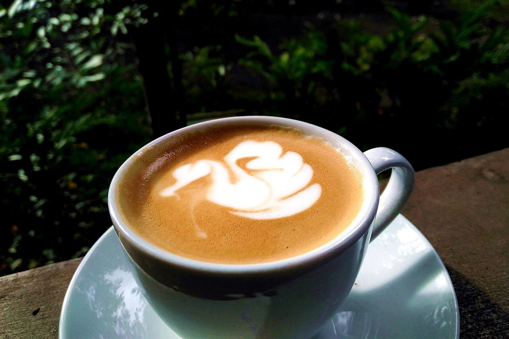
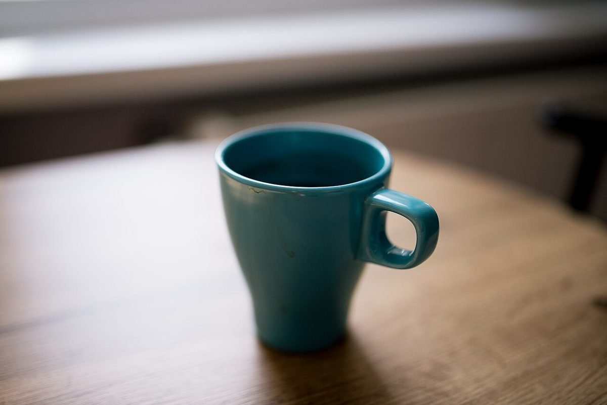

No.4 / 5クリップボード
口コミ
クリップボードに挟むのは、まだ誰のものでもない見本の紙。下の3件は制作側の創作で、実在のお客様の投稿ではありません。
- イメージ例
Instagramをのぞいてみたいです。いつか行ってみたいなと思っています。
- イメージ例
「CAFEもみの木」の投稿を、のんびり見てみたいです。お店のことが少しずつ分かったら、行ってみたいです。
- イメージ例
営業時間などが分かったら、行ってみたいです。それまでは、Instagramの更新を楽しみにしています。
上の文章はすべて制作側が考えた見本です。実在のお客様の声ではなく、お店の評価を示すものでもありません。

v本当の声は
お店の投稿やお客様の声は、Instagram @cafe_mominoki でご覧いただけます。
